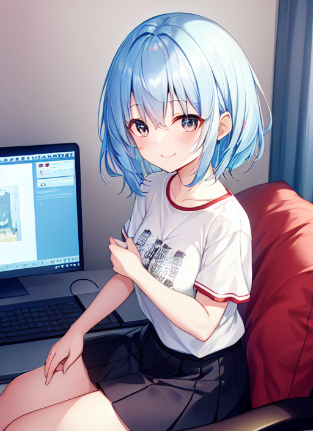

SSライター
とあるアパートの一室、そこに一人の男が住んでいた。 男の名前は瀬戸碧月。 大学生の一人暮らし男である。 そんな彼の趣味はSS（ショートストーリー）を書くことで、いつもいつも新作をSSのサイトにアップしてはそれを読んで好評してくれる人達の言葉に喜んだ。
ある日碧月は、いつものようにSSを書いていた。 内容はある兄弟の日常で、主人公の青年が人見知りでお兄ちゃんっ子な11歳の妹と一緒に買い物に行ったり、映画を見に行ったりするというものである。
カタカタ カタカタ 巧みにキーボードを打ち、SSを書いていく碧月。
「ふぅ・・・。」
キーボードを打つ手を止めると、碧月は一息ついて椅子にもたれかかりグーッと伸びをした。 そしてもう一度パソコンの画面を見て、自分の書いた小説を読んでみる。
「・・・うん、中々いい感じだな。」
自分で書いたSSを自画自賛すると、再び書き始めた。
しばらくSSを書いていると、碧月はSS内の妹に感情移入していた。 妹が悲しそうにすると自分も悲しくなり、妹が嬉しそうにしていると自分も嬉しくなる。 碧月は、まるで自分が妹そのものになったかのように、喜怒哀楽しながらSS書いていった。
するとその時、碧月の背がグングンと縮み始めた。 しかし碧月は書くのに夢中になっているのか、気がついていない。 碧月の背はどんどん縮んでいき、110ぐらいになってようやく止まった。 だが、それだけではなかった。 短く切り揃えられた黒髪はサラッと伸びて水色に染まり、目は澄んだ空色の瞳のクリクリとした真ん丸な目に。 テカテカ光っていたニキビだらけの顔はツルッとしたゆで卵の様な丸顔になり、毛に覆われていた太い腕や脚はスベスベとした短く細いものに。 ブクッと出っ張っていたお腹は空気を抜くかの如く引っ込んでいき、それとは対照的に平たい胸や硬そうなお尻はムクッと膨らんでプルルンと弾む。 また、着ていた服や穿いていたズボンはカジュアルなTシャツとスカートに変わり、シャツとパンツは白のブラとパンティに変わった。 更に、部屋の中も変わった。 壁に貼られたアニメのポスターは人気アイドルのポスターに変わり、同人誌などが置かれた本棚には今話題の少女コミックが。 また、机の側に置いてあった鞄はストラップの付いた女の子向けな鞄に変わり、汚れていたカーテンは鮮やかなピンク色のカーテンになって、変化は終わった。 しかし碧月は、自分や周りがすっかり変わってしまった事にまだ気づいておらず、鼻歌を歌いながらSSを書いていた。
「～♪～♪」
コンコン 部屋の扉を叩く音がした。
「ん・・・誰？」
碧月だった少女は椅子から降りて、ガチャッと扉を開けた。 扉の向かい側には、優しそうな表情をした青年が一人立っていた。
「あ、お兄ちゃん。」
「由美、お母さんがご飯出来たって。」
「あ、うん。ちょっと待ってて。」
少女はそう言うとパソコンの所へ行って、スリープさせた。
「うわぁ、おでんだぁ！」
「今日は寒いからね。いっぱい食べていいのよ。」
エプロン姿の女性がニコッと微笑む。
「おでんにはキリッと冷えた日本酒が合うんだよなぁ。」
眼鏡をかけた男性はそう言うと、お猪口に日本酒を注ぐ。
「それじゃあ・・・。」
青年がそう言って手を合わせると、他の3人も手を合わせて・・・
「「「「いただきます。」」」」 一斉に食前の挨拶をした。